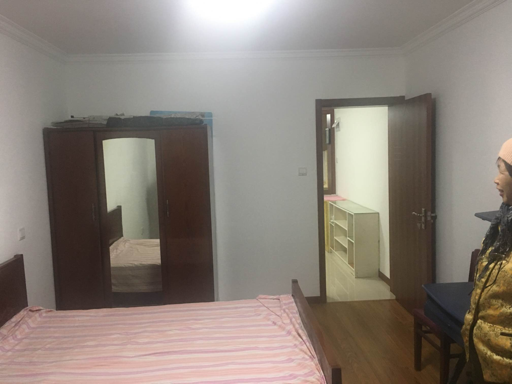
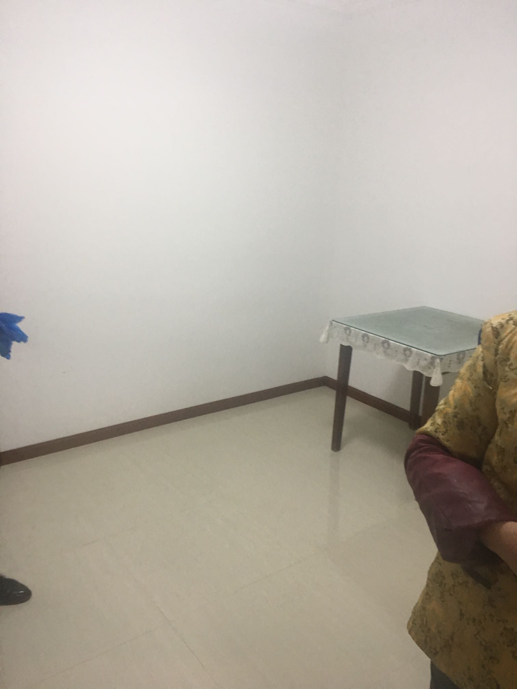
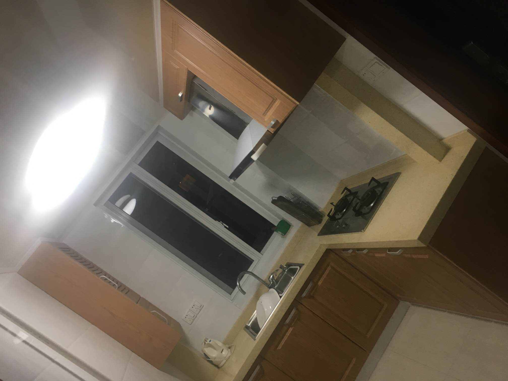
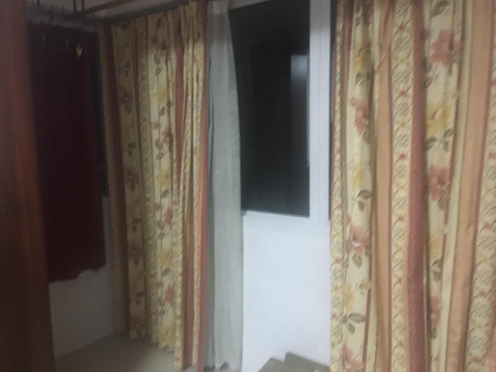
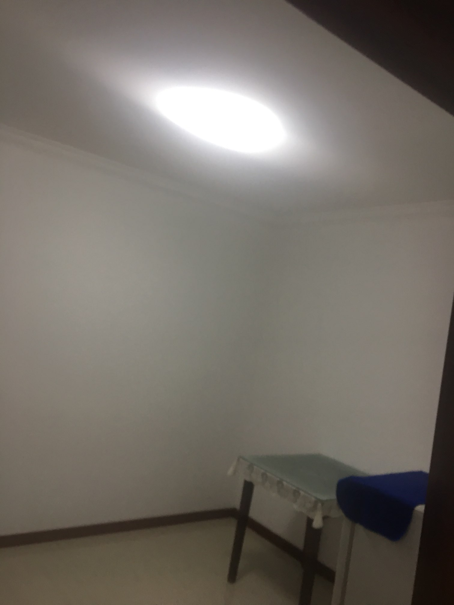

| 房子 | A | B | C |
|---|---|---|---|
| 房租 | 3600 | 4200（砍到4000） | 4500（有望砍刀4000） |
| 交通 | 走十分钟到6号线灵岩南路 和 8号线凌兆新村，根据房东大妈的上班经验，到6号线转11号线转10号线最近 |
方案1： 出门走十分钟到8号线地铁站杨思路，8号到小西门到10号新天地； 方案2： 出门走十分钟坐公交986区间或者986路，40分钟公交车 |
出门2分钟就是杨思路站，比B少6分钟的走路时间 |
| 介绍图片 |      | ||
| 总评 | 房价相对便宜，离地铁10分钟，各种转成，相对不方便 | 房子真大！！！客厅一个空调 + 床，卧室一个空调 + 床，50平，如果C考虑不到，考虑这个 | 好方便，出门走两步就是地铁，卧室大，客厅小，洗衣机放到了客厅电视柜下面。如果价格能砍到4000以下，第一考虑 |